library(tidyverse)
library(ggfortify)
library(factoextra)
library(NbClust)
library(fpc)
library(clustertend)
library(palmerpenguins)13 Clustering
Goals
- Learn about partitional clustering
- Learn about hierarchical clustering
- Use clustering validation methods
- Apply different methods to larger data sets
The goal of clustering is to classify data points into groups (clusters) by without giving the algorithm any knowledge of the correct classification. This type of approach is called unsupervised learning and it is appropriate when the “truth” for your data classification is unavailable or difficult to obtain.
If the truth is unknown, we need a way of deciding which data points belong together. One common set of approaches relies on a measure of closeness, or distance between points. Of those, the classic K-means approach is the most straightforward.
13.1 K-means algorithm
- divide data into K clusters
- calculate centroids for each
- go through each data point until nothing changes
- calculate distance to each centroid
- assign to nearest centroid
- recalculate centroids for the two affected clusters
Let us apply the k-means algorithm to our well-studied penguin data set. In the script below, we remove the NAs, and select out the categorical variables, as they are not directly useful for the distance-based algorithm, leaving the four numeric variables to define similarity between individuals. The question is, will they cluster penguins according to species?t
#set.seed(20)
glimpse(penguins)Rows: 344
Columns: 8
$ species <fct> Adelie, Adelie, Adelie, Adelie, Adelie, Adelie, Adel…
$ island <fct> Torgersen, Torgersen, Torgersen, Torgersen, Torgerse…
$ bill_length_mm <dbl> 39.1, 39.5, 40.3, NA, 36.7, 39.3, 38.9, 39.2, 34.1, …
$ bill_depth_mm <dbl> 18.7, 17.4, 18.0, NA, 19.3, 20.6, 17.8, 19.6, 18.1, …
$ flipper_length_mm <int> 181, 186, 195, NA, 193, 190, 181, 195, 193, 190, 186…
$ body_mass_g <int> 3750, 3800, 3250, NA, 3450, 3650, 3625, 4675, 3475, …
$ sex <fct> male, female, female, NA, female, male, female, male…
$ year <int> 2007, 2007, 2007, 2007, 2007, 2007, 2007, 2007, 2007…pen_data <- penguins %>% drop_na()
#pen_train <- pen_data %>% dplyr::select(-species,-island, -sex, -year) # remove species (the true labels)
pen_train <- pen_data %>% dplyr::select(-species,-island, -sex) # remove species (the true labels)
pen_km <- kmeans(pen_train, 3) #k-means with 3 clusters
pen_kmK-means clustering with 3 clusters of sizes 80, 140, 113
Cluster means:
bill_length_mm bill_depth_mm flipper_length_mm body_mass_g year
1 48.66250 15.39750 219.9875 5365.938 2008.138
2 41.12214 17.94643 189.6286 3461.250 2008.021
3 44.24336 17.44779 201.5487 4310.619 2008.000
Clustering vector:
[1] 2 2 2 2 2 2 3 2 2 3 2 2 3 2 3 2 2 2 3 2 2 2 2 2 3 2 3 2 3 2 3 3 2 2 3 2 3
[38] 2 3 2 3 2 2 3 2 3 2 3 2 2 2 2 2 2 2 3 2 3 2 3 2 3 2 3 2 3 2 3 2 3 2 3 2 3
[75] 2 3 2 3 2 2 2 2 3 2 2 3 2 3 2 3 2 3 2 3 2 3 2 3 2 2 2 3 2 3 2 3 2 3 3 3 2
[112] 2 2 2 2 2 2 2 2 3 2 3 2 3 2 2 2 3 2 3 2 3 2 3 2 2 2 2 2 2 3 2 2 2 2 3 3 1
[149] 3 1 1 3 3 1 3 1 3 1 3 1 3 1 3 1 3 1 1 1 3 1 1 1 1 3 1 1 3 1 1 1 1 1 1 3 1
[186] 3 1 3 3 1 1 3 1 1 1 1 1 3 1 1 1 3 1 3 1 3 1 3 1 3 1 1 3 1 3 1 1 1 3 1 3 1
[223] 3 1 3 1 3 1 3 1 3 1 1 1 1 1 3 1 1 1 1 1 3 1 1 1 1 1 1 3 1 3 1 1 1 3 1 3 1
[260] 1 1 1 1 1 1 2 3 2 2 2 3 2 2 3 2 2 2 2 3 2 3 2 2 2 3 2 2 2 2 2 3 2 2 2 3 2
[297] 3 2 3 2 3 2 3 2 3 3 2 2 2 2 3 2 3 2 2 2 3 2 3 2 2 2 3 2 2 3 2 2 3 2 2 3 2
Within cluster sum of squares by cluster:
[1] 9718878 9724908 9318106
(between_SS / total_SS = 86.6 %)
Available components:
[1] "cluster" "centers" "totss" "withinss" "tot.withinss"
[6] "betweenss" "size" "iter" "ifault" table(pen_km$cluster, pen_data$species)
Adelie Chinstrap Gentoo
1 0 0 80
2 94 46 0
3 52 22 39fviz_cluster(list(data = pen_train, cluster = pen_km$cluster),
ellipse.type = "norm", geom = "point", stand = FALSE, palette = "jco", ggtheme = theme_classic())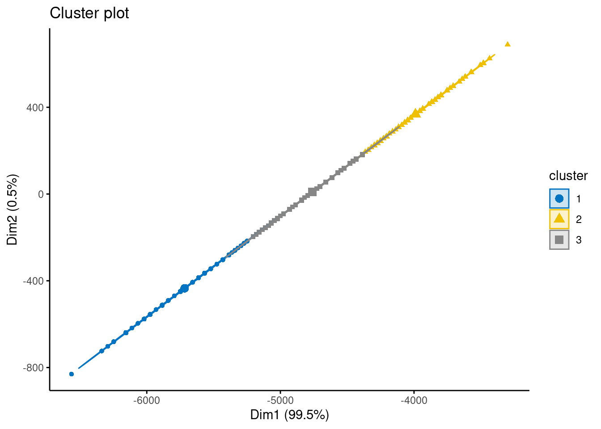
The plot is produced by performing PCA to reduce the number of variables from 4 to 2, helping present the data points in the way that optimizes their visual separation. Notice that the clusters are not well separated, and when compared with the actual classification given by species, they do not do well.
However, the four measurements have very different variances, so we try scaling them to make them all have equal variance of one:
pen_data <- penguins %>% drop_na()
#pen_scaled <- scale(pen_data %>% dplyr::select(-species, -island, -sex, -year) )
pen_scaled <- scale(pen_data %>% dplyr::select(-species, -island, -sex) )
pen_km <- kmeans(pen_scaled, 3)
pen_kmK-means clustering with 3 clusters of sizes 119, 83, 131
Cluster means:
bill_length_mm bill_depth_mm flipper_length_mm body_mass_g year
1 0.65377423 -1.1010497 1.1607163 1.0995561 0.03097981
2 -0.05199786 0.8382938 -0.7308966 -0.5500394 -1.08914719
3 -0.56094130 0.4690575 -0.5913040 -0.6503351 0.66192839
Clustering vector:
[1] 2 2 2 2 2 2 2 2 2 2 2 2 2 2 2 2 2 2 2 2 2 2 2 2 2 2 2 2 2 2 2 2 2 2 2 2 2
[38] 2 2 2 2 2 2 2 3 3 3 3 3 3 3 3 3 3 3 2 3 3 3 3 3 3 3 3 3 3 3 2 3 3 3 3 3 3
[75] 3 3 3 3 3 3 3 3 3 3 3 3 3 3 3 3 3 3 3 3 3 3 3 3 3 3 3 3 3 3 3 3 3 3 3 3 3
[112] 3 3 3 3 3 3 3 3 3 3 3 3 3 3 3 3 3 3 3 3 3 3 3 3 3 3 3 3 3 3 3 3 3 3 3 1 1
[149] 1 1 1 1 1 1 1 1 1 1 1 1 1 1 1 1 1 1 1 1 1 1 1 1 1 1 1 1 1 1 1 1 1 1 1 1 1
[186] 1 1 1 1 1 1 1 1 1 1 1 1 1 1 1 1 1 1 1 1 1 1 1 1 1 1 1 1 1 1 1 1 1 1 1 1 1
[223] 1 1 1 1 1 1 1 1 1 1 1 1 1 1 1 1 1 1 1 1 1 1 1 1 1 1 1 1 1 1 1 1 1 1 1 1 1
[260] 1 1 1 1 1 1 2 2 2 2 2 2 2 2 2 2 2 2 2 2 2 2 2 2 2 2 2 2 2 2 2 2 2 2 3 2 3
[297] 2 3 2 2 3 2 2 3 2 2 3 2 3 3 3 3 3 3 3 3 3 3 3 3 3 3 3 3 3 3 3 3 3 3 3 3 3
Within cluster sum of squares by cluster:
[1] 250.6269 189.7556 265.0704
(between_SS / total_SS = 57.5 %)
Available components:
[1] "cluster" "centers" "totss" "withinss" "tot.withinss"
[6] "betweenss" "size" "iter" "ifault" table(pen_km$cluster, pen_data$species)
Adelie Chinstrap Gentoo
1 0 0 119
2 46 37 0
3 100 31 0fviz_cluster(list(data = pen_scaled, cluster = pen_km$cluster),
ellipse.type = "norm", geom = "point", stand = FALSE, palette = "jco", ggtheme = theme_classic())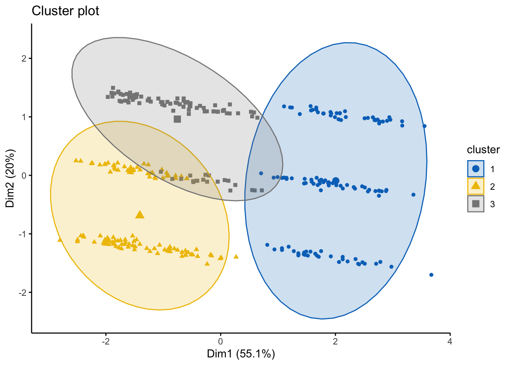
Now we get much better separation, as well as much better prediction quality. However, if you run the above code several times, you will see different results, because k-means starts with a random selection of centroids. In cases like this, where there is not very obvious clusters, it may converge to different classifications. Here, for some trials we see very good prediction quality for all three species, but other times two of the species are commingled.
13.1.1 Assumptions of K-means algorithm
- There is a meaningful distance measure
- Clusters are roughly spherical
- Clusters are of similar size
# Generate random data which will be first cluster
clust1 <- data_frame(x = rnorm(200), y = rnorm(200))
# Generate the second cluster which will ‘surround’ the first cluster
clust2 <- data_frame(r = rnorm(200, 15, .5),
theta = runif(200, 0, 2 * pi),
x = r * cos(theta), y = r * sin(theta)) %>%
dplyr::select(x, y)
#Combine the data
dataset_cir <- rbind(clust1, clust2)
#see the plot
dataset_cir %>% ggplot() + aes(x = x, y = y) + geom_point()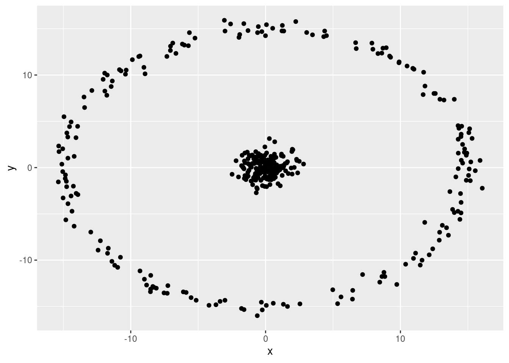
#Fit the k-means model
k_clust_spher1 <- kmeans(dataset_cir, centers=2)
#Plot the data and clusters
fviz_cluster(list(data = dataset_cir,
cluster = k_clust_spher1$cluster),
ellipse.type = "norm",
geom = "point", stand = FALSE,
palette = "jco",
ggtheme = theme_classic())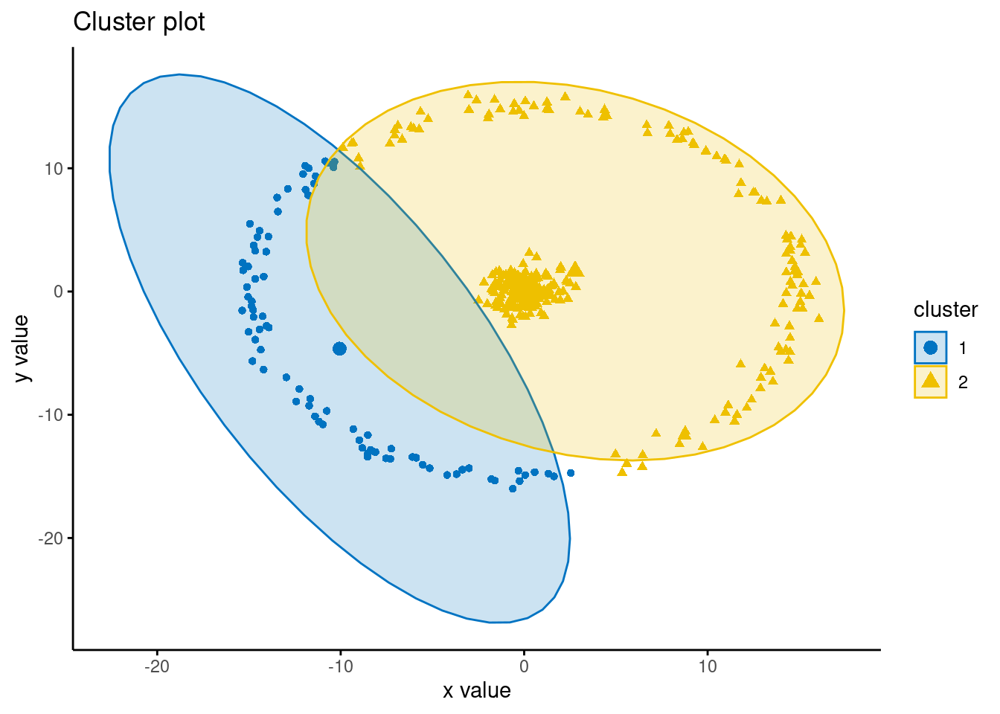
# Make the first cluster with 200 random values
clust1 <- data_frame(x = rnorm(200),
y = rnorm(200))
# Keep 10 values together to make the second cluster
clust2 <- data_frame(x=c(5,5.1,5.2,5.3,5.4),
y=c(5,5,5,5,5))
#Combine the data
dataset_uneven <- rbind(clust1,clust2)
dataset_uneven %>% ggplot() + aes(x = x, y = y) + geom_point()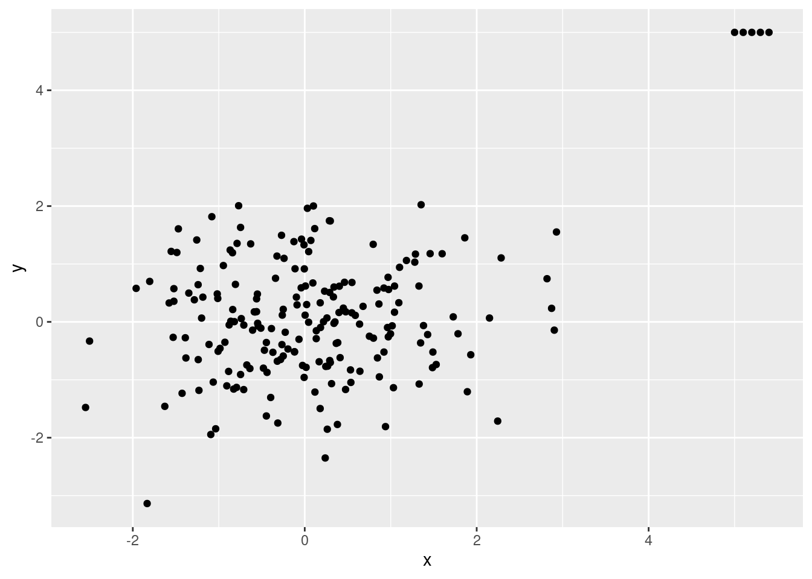
k_clust_spher3 <- kmeans(dataset_uneven, centers=2)
fviz_cluster(list(data = dataset_uneven,
cluster = k_clust_spher3$cluster),
ellipse.type = "norm",
geom = "point",
stand = FALSE,
palette = "jco",
ggtheme = theme_classic())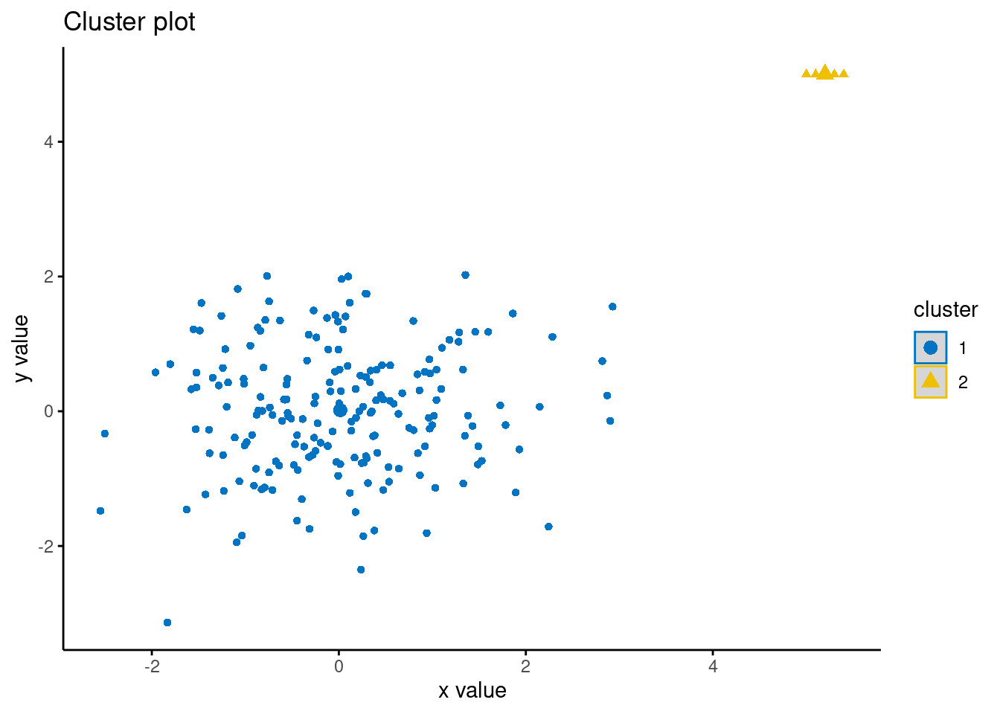
13.2 Hierarchical clustering
Hierarchical clustering is different approach from k-means, although it is also based on a notion of distance. The goal is to create a tree, akin to phylogeny, based on proximity of different points to each other, and then to divide it into groups by cutting the tree a certain depth from the root.
13.2.1 Agglomerative clustering
Start with single data points as “clusters,” then iteratively combine the closest pair of clusters. The closeness may be defined in the following ways:
Single Linkage: In single linkage, we define the distance between two clusters as the minimum distance between any single data point in the first cluster and any single data point in the second cluster.
Complete Linkage: In complete linkage, we define the distance between two clusters to be the maximum distance between any single data point in the first cluster and any single data point in the second cluster.
Average Linkage: In average linkage, we define the distance between two clusters to be the average distance between data points in the first cluster and data points in the second cluster.
Centroid Method: In centroid method, the distance between two clusters is the distance between the two mean vectors of the clusters.
Ward’s Method: This method does not directly define a measure of distance between two points or clusters. It is an ANOVA based approach. One-way univariate ANOVAs are done for each variable with groups defined by the clusters at that stage of the process. At each stage, two clusters merge that provide the smallest increase in the combined error sum of squares.
# Use hcut() which compute hclust and cut the tree
cir_hc <- hcut(dataset_cir, k = 2, hc_method = "single")
# Visualize dendrogram
fviz_dend(cir_hc, show_labels = FALSE, rect = TRUE)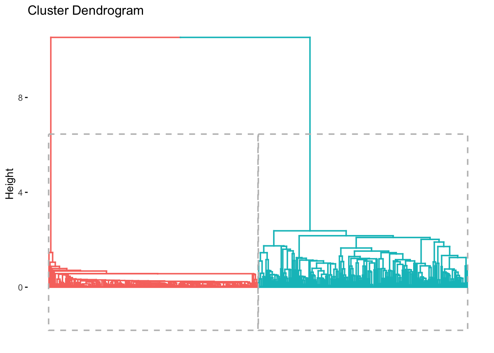
# Visualize cluster
fviz_cluster(cir_hc, ellipse.type = "convex")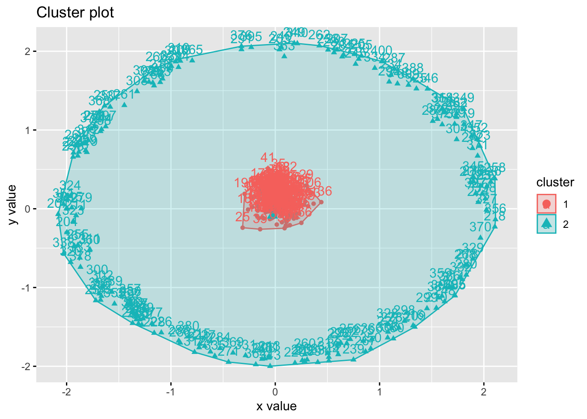
# Use hcut() which compute hclust and cut the tree
uneven_hc <- hcut(dataset_uneven, k = 2, hc_method = "single")
# Visualize dendrogram
fviz_dend(uneven_hc, show_labels = FALSE, rect = TRUE)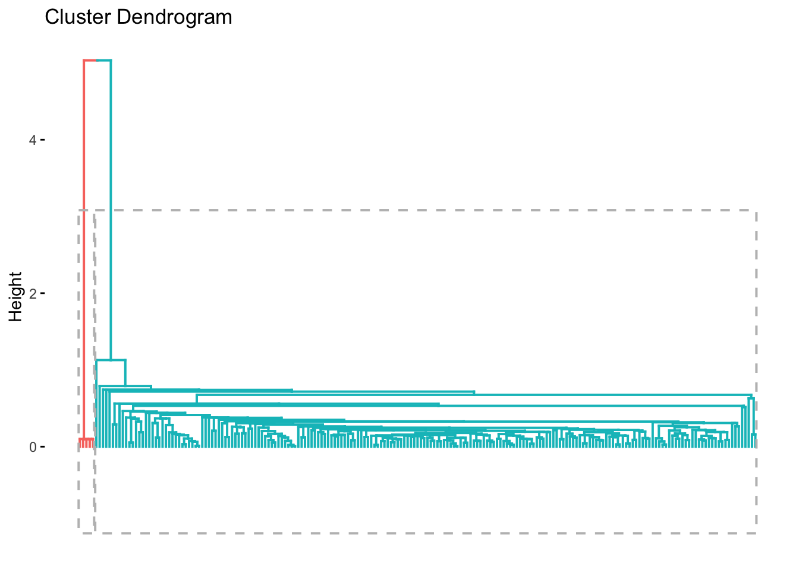
# Visualize cluster
fviz_cluster(uneven_hc, ellipse.type = "convex")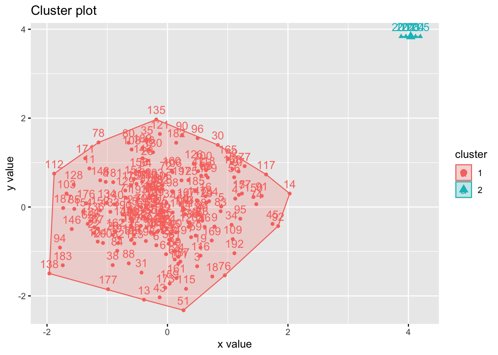
13.2.2 Clustering penguin data using hierarchical methods
Try different methods and see which one generates the best results
# Hierarchical clustering
# ++++++++++++++++++++++++
# Use hcut() which compute hclust and cut the tree
pen_hc <- hcut(pen_scaled, k = 3, hc_method = "complete")
# Visualize dendrogram
fviz_dend(pen_hc)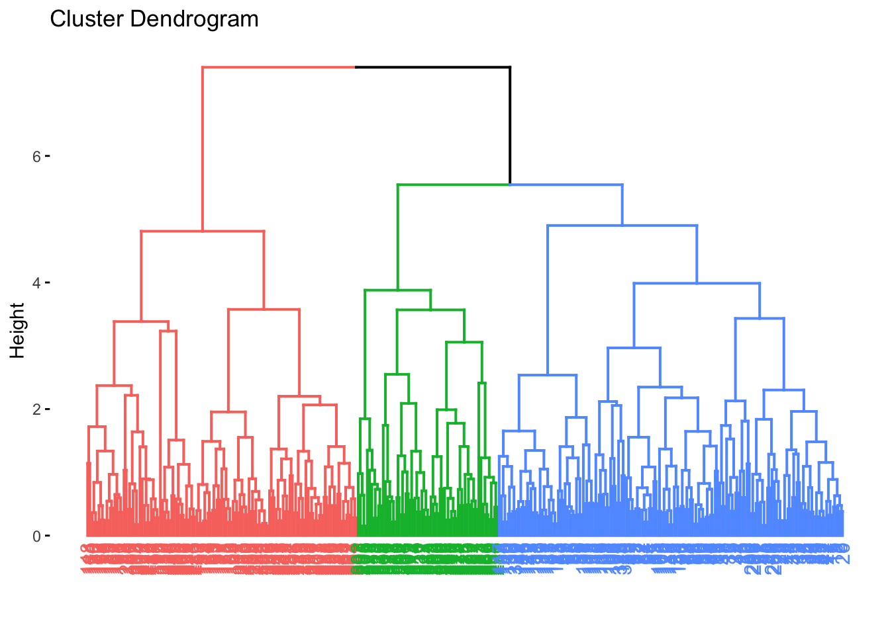
# Visualize cluster
fviz_cluster(pen_hc)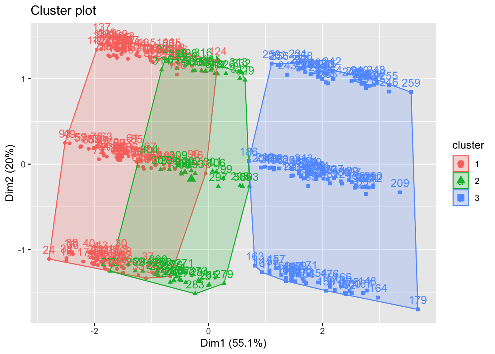
table(pen_hc$cluster, pen_data$species)
Adelie Chinstrap Gentoo
1 145 7 0
2 1 61 0
3 0 0 119Exercise Try using different clustering methods!
13.3 Clustering analysis and validation
13.3.1 Hopkins statistic
Comparing the mean nearest-neighbor distance between uniformly generated sample points and mean nearest-neighbor distance within the data set. \[ H = 1 - \frac{\sum u^d_i}{\sum u^d_i + \sum w^d_i} \] This quantifies the “clustering tendency” of the data set.
# Check Cluster Tendency--Hopkins Statistic
hopkins(pen_scaled, n = 30) # n should be about 20% of the data$H
[1] 0.2321092# run a couple times to sample repeatedlyIf H is below 0.5 reject the null hypothesis, which is that the data are generated by a Poisson point process (uniformly distributed.)
# Visual Assessment of Cluster Tendency
fviz_dist(dist(pen_scaled), show_labels = FALSE)+ labs(title = "Scaled penguin data")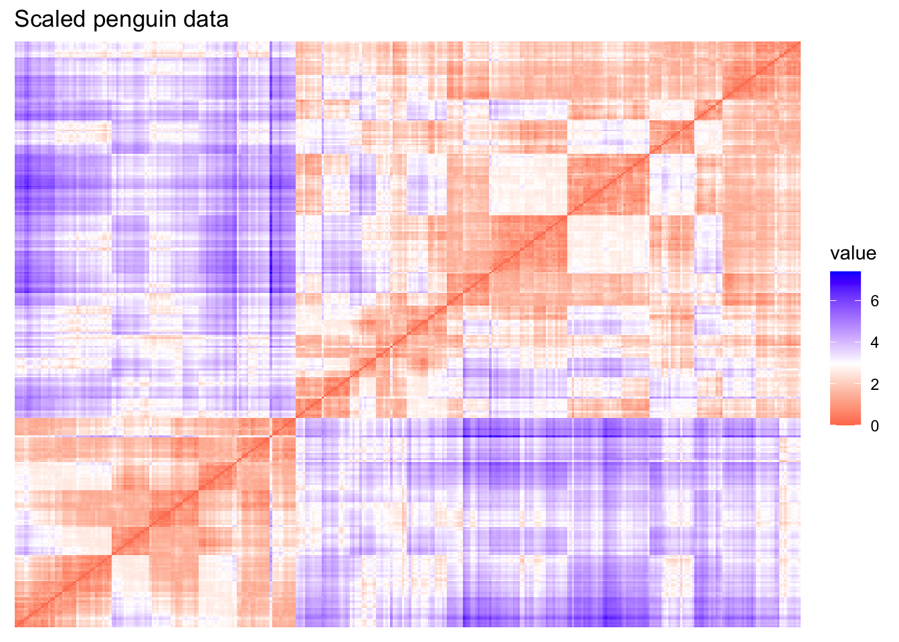
- Red is high similarity (low dissimilarity)
- Blue is low similarity (high dissimilarity)
13.3.2 Elbow method
# Elbow method
fviz_nbclust(pen_scaled, kmeans, method = "wss") + geom_vline(xintercept = 2, linetype = 2)+
labs(subtitle = "Elbow method for K-means of the scaled penguin data")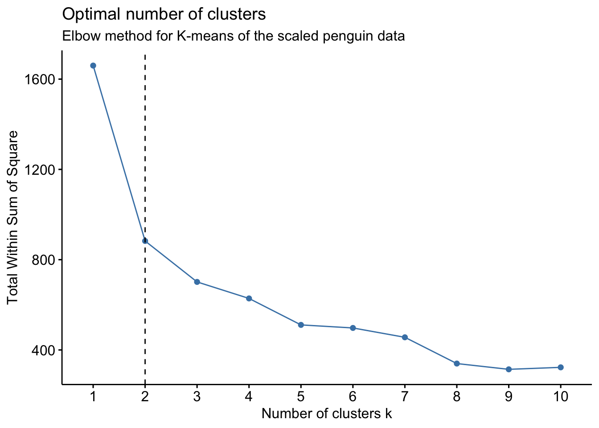
13.3.3 Silhouette Plot
Measures how similar an object \(i\) is to the other objects in its same cluster versus the objects outside of its cluster; \(S_i\) values range from -1 to 1. Close to 1 means very similar to objects in its own group and dissimilar to others
# Silhouette method
fviz_nbclust(pen_scaled, kmeans, method = "silhouette")+ labs(subtitle = "Silhouette method for k-means")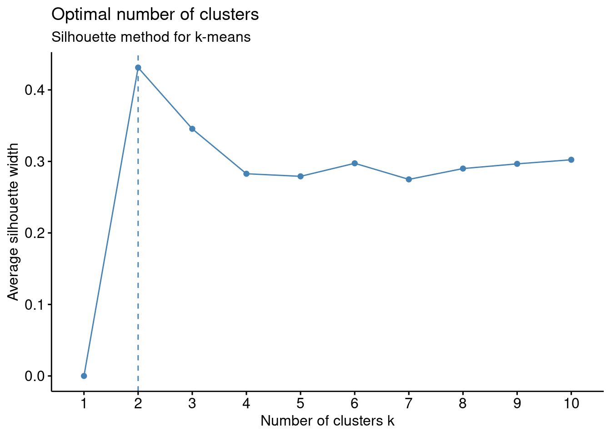
13.3.4 Lazy way: use all the methods!
# not evaluating because it does not run on my computer SA Sept 22 2022
nb <- NbClust(pen_scaled, distance = "euclidean", min.nc = 2,
max.nc = 10, method = "kmeans")
fviz_nbclust(nb)13.3.5 Validation using bootstrapping
One common approach to validating clustering is to use the approach called bootstrapping which involves repeatedly sampling from the data set, running the clustering algorithm and comparing the results. One algorithm uses the Jaccard coefficient to quantify similarity between sets, which is defined as the number of points in the intersection of the two sets (those which are in both sets), divided by the number of points in the union of the two sets (the point that are in either one or the other set):
\[ J = \frac{ \vert A \cap B \vert }{\vert A \cup B \vert} \] The vertical lines indicate the number of points (cardinality) in the set.
k <- 3
cboot.hclust <- clusterboot(pen_scaled, clustermethod=kmeansCBI, k= k)boot 1
boot 2
boot 3
boot 4
boot 5
boot 6
boot 7
boot 8
boot 9
boot 10
boot 11
boot 12
boot 13
boot 14
boot 15
boot 16
boot 17
boot 18
boot 19
boot 20
boot 21
boot 22
boot 23
boot 24
boot 25
boot 26
boot 27
boot 28
boot 29
boot 30
boot 31
boot 32
boot 33
boot 34
boot 35
boot 36
boot 37
boot 38
boot 39
boot 40
boot 41
boot 42
boot 43
boot 44
boot 45
boot 46
boot 47
boot 48
boot 49
boot 50
boot 51
boot 52
boot 53
boot 54
boot 55
boot 56
boot 57
boot 58
boot 59
boot 60
boot 61
boot 62
boot 63
boot 64
boot 65
boot 66
boot 67
boot 68
boot 69
boot 70
boot 71
boot 72
boot 73
boot 74
boot 75
boot 76
boot 77
boot 78
boot 79
boot 80
boot 81
boot 82
boot 83
boot 84
boot 85
boot 86
boot 87
boot 88
boot 89
boot 90
boot 91
boot 92
boot 93
boot 94
boot 95
boot 96
boot 97
boot 98
boot 99
boot 100 print(cboot.hclust)* Cluster stability assessment *
Cluster method: kmeans
Full clustering results are given as parameter result
of the clusterboot object, which also provides further statistics
of the resampling results.
Number of resampling runs: 100
Number of clusters found in data: 3
Clusterwise Jaccard bootstrap (omitting multiple points) mean:
[1] 0.5994643 0.5494741 0.7072403
dissolved:
[1] 33 67 0
recovered:
[1] 23 15 27#cboot.hclust <- clusterboot(bcdata, clustermethod=hclustCBI,
# method="single", k=2)13.4 Application to breast cancer data
The following measurements are based on biopsy data on patients with suspected breast cancer (see [5]). It contains several measurements of cell characteristics, as well as the classification of each biopsy into malignant or benign (2 or 4). Let us see if using clustering
# Import Breast Cancer Data Set
fulldata <- read_csv("data/Wisconsin_Breast_Cancers.csv")
bcdata <- fulldata %>% drop_na() %>% dplyr::select(-Sample, -Class)
glimpse(fulldata)Rows: 684
Columns: 11
$ Sample <dbl> 1000025, 1002945, 1015425, 1016277, 101702…
$ Clump_Thickness <dbl> 5, 5, 3, 6, 4, 8, 1, 2, 2, 4, 1, 2, 5, 1, …
$ Size_Uniformity <dbl> 1, 4, 1, 8, 1, 10, 1, 1, 1, 2, 1, 1, 3, 1,…
$ Shape_Uniformity <dbl> 1, 4, 1, 8, 1, 10, 1, 2, 1, 1, 1, 1, 3, 1,…
$ Marginal_Adhesion <dbl> 1, 5, 1, 1, 3, 8, 1, 1, 1, 1, 1, 1, 3, 1, …
$ Single_Epithelial_Cell_Size <dbl> 2, 7, 2, 3, 2, 7, 2, 2, 2, 2, 1, 2, 2, 2, …
$ Bare_Nuclei <dbl> 1, 10, 2, 4, 1, 10, 10, 1, 1, 1, 1, 1, 3, …
$ Bland_Chromatin <dbl> 3, 3, 3, 3, 3, 9, 3, 3, 1, 2, 3, 2, 4, 3, …
$ Normal_Nucleoli <dbl> 1, 2, 1, 7, 1, 7, 1, 1, 1, 1, 1, 1, 4, 1, …
$ Mitoses <dbl> 1, 1, 1, 1, 1, 1, 1, 1, 5, 1, 1, 1, 1, 1, …
$ Class <dbl> 2, 2, 2, 2, 2, 4, 2, 2, 2, 2, 2, 2, 4, 2, …# Visually Inspect Data (PCA)
fviz_pca_ind(prcomp(bcdata), title = "PCA - Breast Cancer data", geom = "point", ggtheme = theme_classic())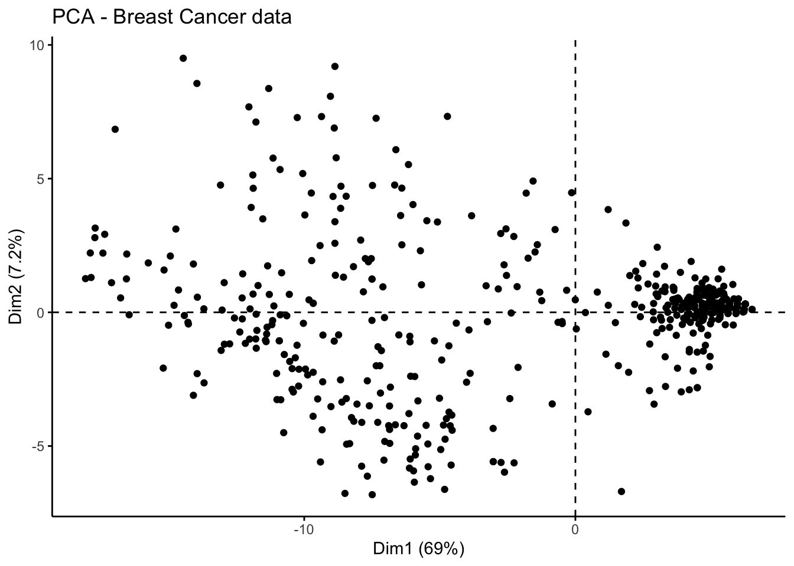
bc_km <- kmeans(scale(bcdata), 2)
bc_kmK-means clustering with 2 clusters of sizes 231, 453
Cluster means:
Clump_Thickness Size_Uniformity Shape_Uniformity Marginal_Adhesion
1 0.9752406 1.1970884 1.1888401 1.0181299
2 -0.4973081 -0.6104358 -0.6062297 -0.5191788
Single_Epithelial_Cell_Size Bare_Nuclei Bland_Chromatin Normal_Nucleoli
1 1.0066757 1.1562984 1.0783707 1.042569
2 -0.5133379 -0.5896356 -0.5498977 -0.531641
Mitoses
1 0.6021640
2 -0.3070638
Clustering vector:
[1] 2 1 2 1 2 1 2 2 2 2 2 2 2 2 1 1 2 2 1 2 1 1 2 2 2 2 2 2 2 2 2 1 2 2 2 1 2
[38] 1 1 1 1 1 1 2 1 2 2 1 1 2 1 1 1 1 1 2 2 2 1 2 1 2 2 1 2 1 1 2 2 1 2 1 1 2
[75] 2 2 2 2 2 2 2 2 1 1 1 1 2 2 2 2 2 2 2 2 2 2 1 1 1 2 2 2 1 1 1 1 2 1 2 1 1
[112] 1 2 2 2 1 2 2 2 2 1 1 1 2 1 2 1 2 2 2 1 2 2 2 2 2 2 2 2 1 2 2 2 2 2 1 2 1
[149] 1 2 2 1 2 2 1 1 2 2 2 2 1 1 2 2 2 2 2 1 1 1 2 1 2 2 2 2 2 1 1 2 1 1 1 2 1
[186] 1 2 2 2 2 1 2 2 2 1 1 2 2 2 1 1 2 2 2 1 1 2 1 1 1 2 2 1 2 2 1 2 1 1 2 1 1
[223] 2 1 1 1 2 1 2 1 1 1 1 2 2 2 2 2 2 1 2 2 2 1 1 1 1 1 2 2 2 1 1 1 1 1 1 2 1
[260] 1 1 2 1 2 1 2 2 2 2 2 1 2 2 1 1 1 1 1 2 1 1 2 2 1 1 1 2 1 1 2 1 2 1 1 2 2
[297] 1 2 2 2 1 2 2 1 1 2 1 1 2 1 2 2 2 2 1 1 1 2 2 1 1 2 1 2 2 1 1 2 2 2 1 2 2
[334] 2 2 1 2 2 1 1 2 2 2 1 1 1 1 1 2 2 2 2 1 1 2 2 2 2 2 2 2 2 2 2 2 2 2 1 2 2
[371] 2 2 1 2 2 2 2 1 2 2 2 2 2 2 2 2 1 2 2 2 2 2 2 2 2 2 2 1 2 1 2 1 2 2 2 2 1
[408] 2 2 2 1 2 1 2 2 2 2 2 2 1 1 1 2 2 2 1 2 2 2 2 2 2 2 2 1 2 2 2 1 2 2 1 1 2
[445] 2 2 2 2 2 2 1 1 1 2 2 2 2 2 2 2 2 2 2 2 1 2 2 1 1 2 2 2 1 1 2 2 1 2 1 2 2
[482] 2 2 2 2 2 2 2 2 2 2 1 2 2 2 2 2 2 2 1 1 2 2 2 1 2 2 1 1 2 2 2 2 2 2 1 2 2
[519] 2 2 2 2 2 2 2 2 2 2 2 2 2 1 2 2 1 2 2 2 2 2 2 2 2 2 2 2 2 2 2 2 1 2 2 1 1
[556] 1 1 2 2 1 2 2 2 2 2 2 1 1 2 2 2 1 2 1 2 1 1 1 2 1 2 2 2 2 2 2 2 2 1 1 1 2
[593] 2 1 2 1 1 1 2 2 2 2 2 2 2 2 2 2 2 2 1 2 2 2 2 2 2 1 2 2 1 2 2 2 2 2 2 2 2
[630] 2 2 2 1 2 2 2 2 2 2 2 2 1 1 2 2 2 2 2 2 2 2 2 1 1 1 2 2 2 2 2 2 2 2 2 1 1
[667] 2 2 2 2 2 2 2 2 2 1 2 2 2 2 1 1 1 1
Within cluster sum of squares by cluster:
[1] 2156.785 573.108
(between_SS / total_SS = 55.6 %)
Available components:
[1] "cluster" "centers" "totss" "withinss" "tot.withinss"
[6] "betweenss" "size" "iter" "ifault" table(bc_km$cluster, fulldata$Class)
2 4
1 10 221
2 434 19#irisCluster$cluster <- as.factor(irisCluster$cluster)
#ggplot(iris, aes(Petal.Length, Petal.Width, color = iris$cluster)) + geom_point()
fviz_cluster(list(data = bcdata, cluster = bc_km$cluster),
ellipse.type = "norm", geom = "point", stand = FALSE, palette = "jco", ggtheme = theme_classic())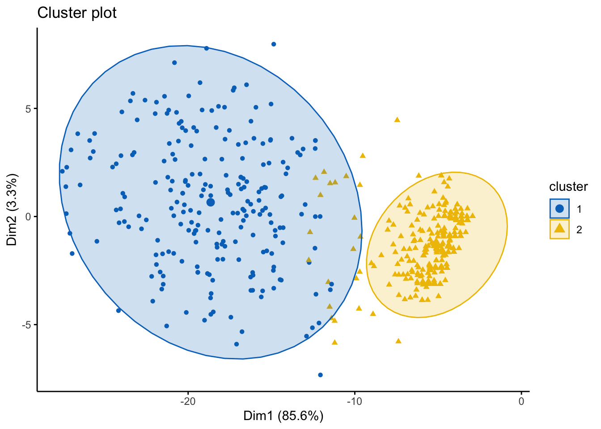
# Use hcut() which compute hclust and cut the tree
bc_hc <- hcut(scale(bcdata), k = 2, hc_method = "ward")
# Visualize dendrogram
fviz_dend(bc_hc, show_labels = FALSE, rect = TRUE)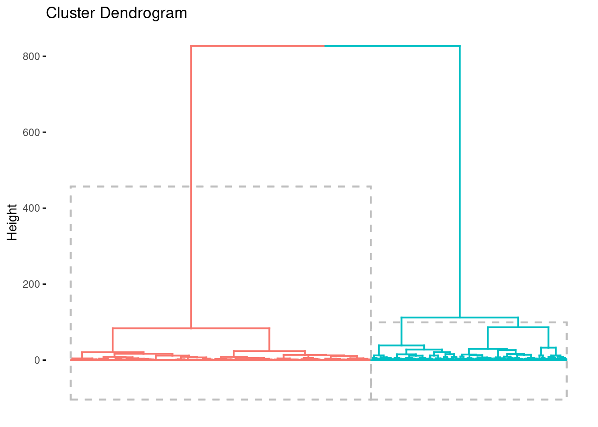
# Visualize cluster
fviz_cluster(bc_hc, ellipse.type = "convex")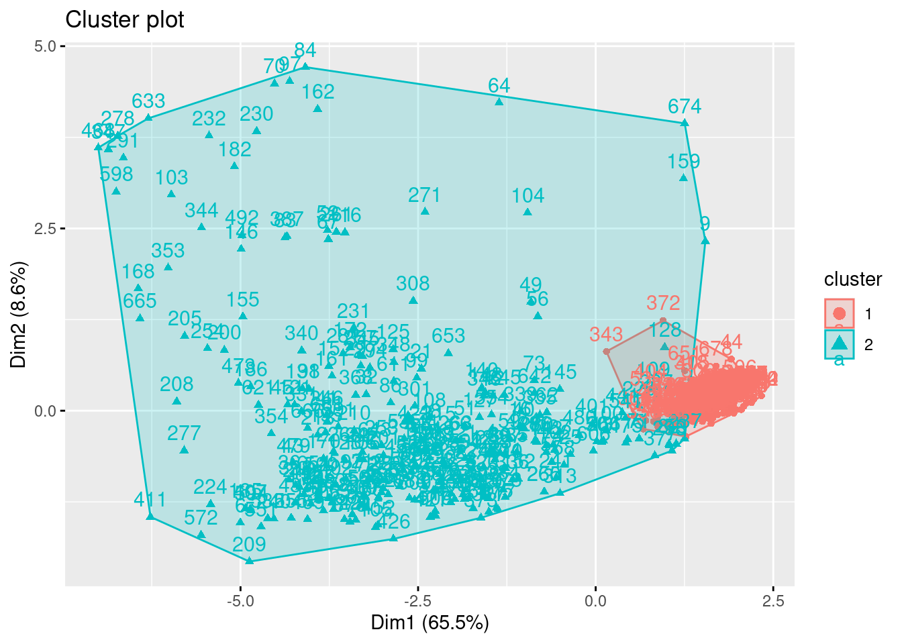
table(bc_hc$cluster, fulldata$Class)
2 4
1 412 2
2 32 23813.5 References:
- https://www.r-bloggers.com/exploring-assumptions-of-k-means-clustering-using-r/
- https://onlinecourses.science.psu.edu/stat505/node/143/
- https://github.com/hhundiwala/hierarchical-clustering
- https://www.r-bloggers.com/bootstrap-evaluation-of-clusters/
- https://archive.ics.uci.edu/ml/datasets/Breast+Cancer+Wisconsin+(Diagnostic)